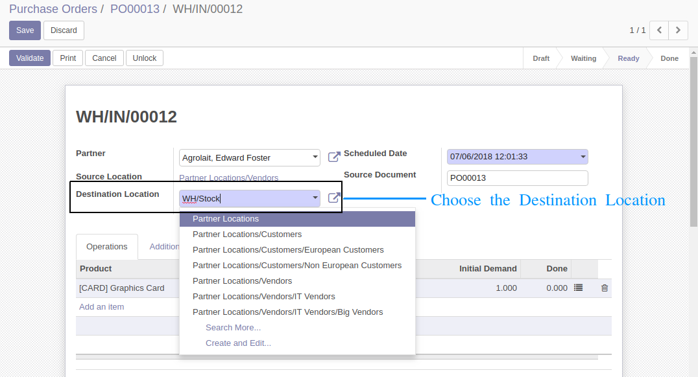

<section class="oe_container">
    <div class="oe_row oe_spaced">
        <h2 class="oe_slogan" style="color:#875A7B;">Change Destination Location For Purchase Orders</h2>
        <h3 class="oe_slogan">By default in odoo there is no option to change the destination location of the goods to be received, it goes directly into WH/Stock. This makes it difficult for users with multi warehouse to choose the appropriate destination location for receiving goods. With this module we can overcome this drawback.
        This can also be used by users to receive select goods to certain warehouse/location.

 </h3>
</section>

<section class="oe_container">
    <div class="oe_row oe_spaced">
        
     
        <div class="oe_span12">
               <h3 class="oe_slogan">Purchase Order Goods Transfer (Stock Picking) Form</h3>
            <div class="oe_demo oe_picture oe_screenshot">
                
            </div>
        </div>
                    
    </div>
</section>

<section class="oe_container">
    <h2 class="oe_slogan" style="margin-top:20px;" >Need Any Help? Feel Free To Contact us.</h2>
    <div class="oe_slogan" style="margin-top:10px !important;">
        <div>
            <a  class="btn btn-primary btn-lg mt8"
            style="color: #FFFFFF !important;border-radius: 0;" href="mailto:0d00devsrm@gmail.com"><i
            class="fa fa-envelope"></i> Email </a>
           
        </div>
        <br>
        

    </div>
</section>

<section class="oe_container oe_separator">
</section>
